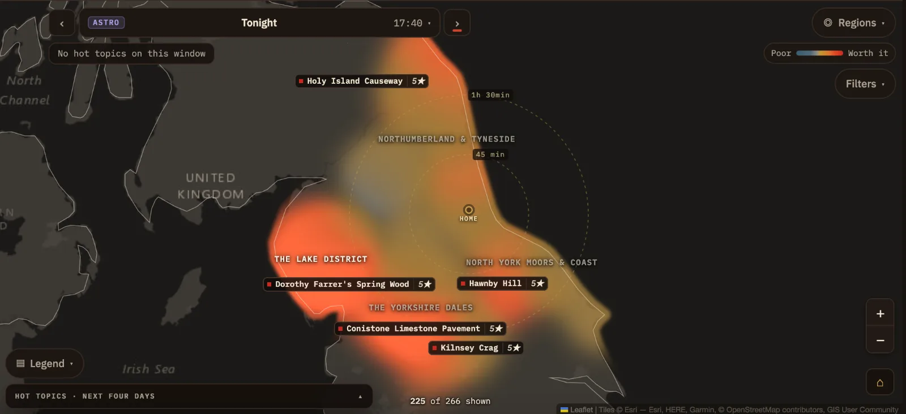

Aurora and
night sky.
As well as sunrise and sunset, PhotoCast covers the night: aurora alerts, aurora and astro nights on the Map (astrophotography means photographing the night sky), and locations with less light pollution.
Aurora alerts
PhotoCast checks space weather data every five minutes, day and night. During the day it watches tonight's outlook, and after dark it looks at current conditions too. When the northern lights are possible, an aurora banner appears at the top of the app. It's either a forecast for tonight or an alert that the aurora is active now.
The banner shows the strength of the alert, Moderate or Strong, and where to look: north, low on the horizon, after dark. On a phone it shrinks to a single strip.
With Pro Pro
The Pro banner adds the detail you need to decide where to go:
- the Kp index, a measure of geomagnetic activity, and the live solar wind reading (Bz) while the aurora is active. Bz is the north–south component of the magnetic field carried by the solar wind; a sustained southward Bz can favour aurora
- a small map of the aurora forecast, with the best dark-sky location and its rating
- a line showing roughly how far south the aurora may be visible
- View on map →, which opens that night on the Map
If every dark-sky location is under cloud, the banner says so. A Strong alert gently pulses while the aurora is active and the solar wind is favourable.
Press ✕ to dismiss the banner. It comes back if the alert gets stronger.
ProAurora forecasts are available with Pro: where the aurora may show, rated at each dark-sky location, with roughly how far south it may reach. Lite still gets the alert.
Aurora nights on the MapPro
When the aurora is possible, aurora nights appear in the Map's list of events alongside the sunrises and sunsets, marked in green. Choose one and the map changes to aurora colours, from dark sky to aurora green, with each location rated for that night.
A line across the map estimates where the aurora may clear the northern horizon on camera. It is an estimate, not a firm boundary: north of it you have a chance, and the further north you are the better. Dashed amber is the forecast and pale is live.
Aurora nights have no regional verdict, so the rankings and Best bet used for sunrise and sunset don't apply. Go by the stars on each location and where the line falls. The Subject filter and the dark-sky toggle are hidden on aurora nights, because those nights already use only dark-sky locations.
ProAurora nights on the Map are available with Pro. On Lite the aurora night in the list explains what Pro adds.
Astro nights
Astro nights rate locations for a clear, dark night sky, for stargazing, the Milky Way and astrophotography (photographing the night sky). They appear in the Map's list of events marked ASTRO, on nights the forecast has covered, with the time the night begins.
Each location's rating takes account of the cloud forecast for the night and how dark the sky is there, so a clear sky over a town scores lower than the same sky over the fells. The map uses the same Poor to Worth it colours as a sunrise or sunset. The moon's phase and brightness are shown in a location's details, because a bright moon washes out faint stars.
Astro nights have no regional verdict or Best bet. Go by the stars on each location. On astro nights the Subject filter and the dark-sky toggle are hidden, because those nights already use only dark-sky locations and sky darkness is already part of the rating. The rating floor, drive time and scope filters stay.

Dark skies
Every location has a light pollution rating on the Bortle scale, from 1 for the darkest skies to 9 for a city centre. You'll see it as "sky 3" on a location's chip and in its details.
- Bortle 1–2
- Excellent dark sky. The Milky Way can show rich detail under clear, moonless conditions, and faint aurora may show well.
- Bortle 3–4
- Moderate. Good for most night photography, and often suitable for aurora.
- Bortle 5 and above
- Brighter skies near towns. Fine for a strong aurora or the moon, less so for faint stars.
For a sunrise or sunset, 🔭 Dark sky only in the Map's Filters narrows the map to the darker locations. It's a quick way to scout a location by daylight for a night shoot. Sky darkness is only part of the picture: aurora visibility also depends on the strength of the display, the cloud and your view to the north.
Other night-sky events
The 🌌 Night sky family of hot topics also covers:
- Meteor showers. The peak dates are known in advance and listed in Coming up. Whether you'll see anything depends on the cloud and the moon, so look again once the date reaches At a Glance.
- Noctilucent clouds. Thin, very high clouds lit by the sun from below the horizon on summer nights, often electric blue and low in the northern sky. The season appears in Coming up, and a banner appears when sightings are reported.
Night-sky entries in Coming up can open the Map with the dark-sky locations shown for that date.
Asking about the nightPro
Ask PhotoCast answers night questions too, such as "Any aurora tonight?" or "Where's darkest within an hour?". A night pick shows the sky rating, the aurora rating where there is one, the hours of darkness, how dark the sky is and the drive time from home.
ProAsk PhotoCast is available with Pro.
Tips
- A camera picks up aurora the eye often can't. Try a few seconds' exposure facing north, even if the sky looks empty.
- Choose somewhere with a clear, low view to the north. A north-facing coast is ideal.
- Check the live solar wind on the banner before setting off. Conditions can change within minutes.
- For stars, aim for nights near the new moon.